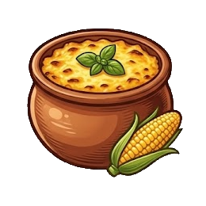
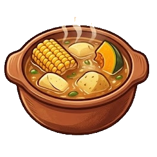
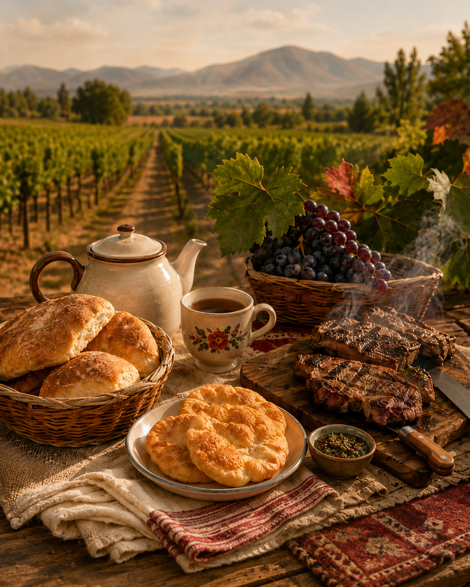

¡Bienvenida y bienvenido!
Sabores de Chile
Este es un sitio dedicado a la cocina tradicional chilena, esa que aprendemos en la casa y que nos junta alrededor de la mesa. Aquí vas a encontrar recetas de toda la vida, la historia detrás de cada plato y las tradiciones que hacen que comer en Chile sea mucho más que solo alimentarse.
Recetas tradicionales
Empezamos por lo más rico: los platos clásicos que no pueden faltar. Paso a paso, con ingredientes que encuentras en cualquier feria, para que te queden igual que en casa.

Pastel de choclo
Choclo molido y gratinado sobre un buen pino, con su toque de azúcar. El plato de los almuerzos de verano por excelencia.

Cazuela de la casa
Un caldo reconfortante con su presa, papa, zapallo y choclo. Perfecta para los días fríos del sur de Chile.

Historia y tradiciones
En Chile, la comida siempre viene acompañada de una historia. Aquí contamos de dónde vienen nuestros platos y las costumbres que los rodean:
- La once: ese momento sagrado de la tarde con pan amasado, té y sopaipillas.
- El asado: la junta de los fines de semana, donde el secreto está en la paciencia.
- La vendimia: la cosecha de la uva en el Valle Central y el vino que la acompaña.
Cada receta guarda un pedacito de identidad, y en esta sección las iremos compartiendo de a poco.
Sobre el sitio
Sabores de Chile nació como un proyecto para rescatar y compartir la cocina con la que crecimos. La idea es sencilla: que cualquier persona, esté donde esté, pueda cocinar un pedacito de Chile en su casa.